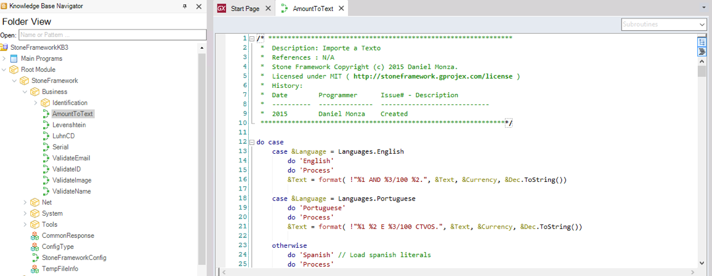
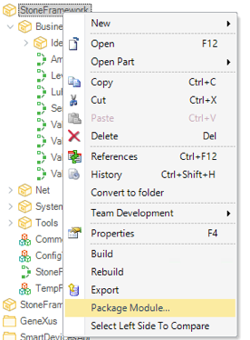
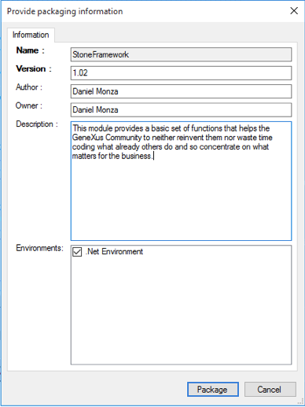
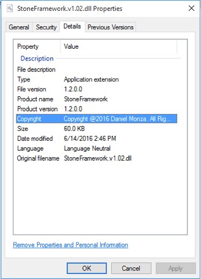
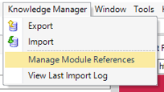
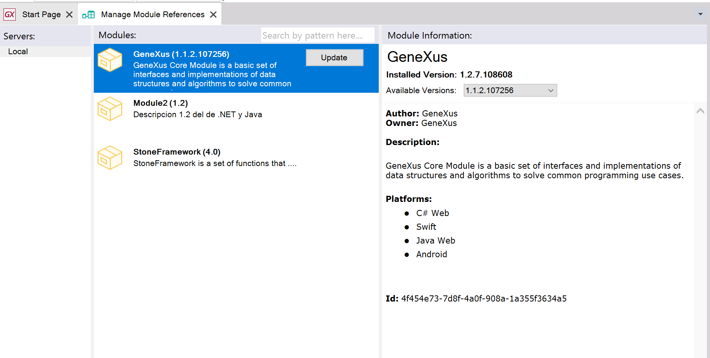
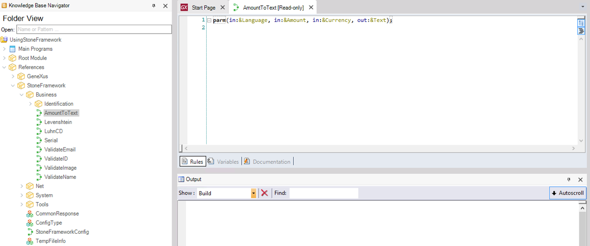
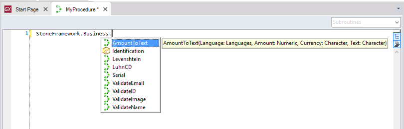

GeneXus allows distribution of the API and binaries of a Module and installation of it in other Knowledge Bases.
A Module installed using this mechanism, provided by another KB, has the following characteristics:
- Just the API of the module is visible
- The API is read-only
- It consists of a specific version of the API and its implementation (the corresponding binaries)
- A versioning system (Module Manager) allows to update it when new versions are available.
That provides the following benefits:
- It allows preserving privacy of the code
- It is very clear that the module is maintained by the provider, and unwanted changes are avoided.
- It improves build performance (Code is built just once, in the origin)
- Modules can be easily distributed in the company or publicly through a marketplace
GeneXus itself uses this mechanism to provide the GeneXus Core module and others, like GeneXus Artificial Intelligence.
Through the following steps, you can create a module (use an existing one), distribute it, install it in another KB, and use it there.
The following sample has been modularized with the permission of its owner, Daniel Monza.



The available platforms correspond to Environments (and the associated generators) of the KB. You can select the platforms for the ones you want to package (i.e. .NET, Java, Android, iOS)
- Building. GeneXus builds the Module for each selected environment. (GeneXus actually 'Rebuild's it)
- Packaging. GeneXus creates a package that contains the binaries and module definition files.
In this specific case, it generated a "<Knowledge Base Directory>\modules\StoneFramework_1.02.opc" file. (The 'opc' extension stands for Open Packaging Convention; it is a zip file)
The binary is created with the provided version and copyright information

Congratulations! Your module has been created!


Note:
GeneXus Module Manager still just shows local modules. It searches for them under %appdata%\Roaming\GeneXus\GeneXus\16\Modules_v1.0
If the IDE does not show the module previously created try to close It and re-open.


Note: The binaries of the referenced modules will be copied to your target environment directory during build time.
These tasks are available to package and install modules batch
- PackageModule
- Parameters: ModuleName (string), OutputDirectory (string), Rebuild (boolean - default false)
- InstallModule
- Parameters: ModuleName (string), Version (string), OnlyIfNewer (boolean - default true)
- UpdateModule
- Parameters: ModuleName (string), Version (string)(*)
(*)If Version is not specified: If the module is Built-in, forces to update it to the one required by GeneXus. If it is not built-in, it updates the module to the newest available version.
More Information related MSBuild tasks execution at MSBuild Tasks
- There can exist multiple same-named objects distributed in different modules.
In order to identify each one, It is necessary to "fully qualify" them, indicating the full path through de Module structure to that object using dot notation.
For example, GeneXus.SD.Actions.<property|method|event> is different than MyModule.Actions.<property|method|event>.
- To package extra or external files required by the module, set Module Resources property
Restrictions
- When Distributing
- Only submodules of the Root Module can be packaged (i.e. A module with a parent that is not the Root cannot be packaged)
- Circular dependencies between modules are not allowed
- Only Data Providers, Procedures, External Objects, Structured Data Types, and Domains can be part of the module's interface
- Translation Type Property must be set to 'No Translation' (default)
- On the Target KB
- The distributed module must be generated with the same GeneXus version than the one that references the module.
- Downgrade (installing a lower version of an already installed module) is not fully supported.
- There is no marketplace for Modules yet; Module Manager only shows local modules (the ones it finds under %appdata%\Roaming\GeneXus\GeneXus\16\Modules)
This feature is available since GeneXus 15.
Note: GeneXus 16 upgrade 5 added the possibility to Package Module with database access for Solutions extensibility scenarios) for Net and NetCore Generator.
Q: What if the following situation happens: In KB "Provider" is Object A and that object is exported to KB "Client". Then, in KB "Provider", Object A is put into a module M and then that Module is packaged and installed in KB "Client"?
A: Since the internal GUID of object A remains unchanged, GeneXus resolves all; that means: References to object A will now point to M.A. A is not anymore in its folder, it is in the module M under References in KB Explorer; it is read-only and only its interface is available.
Q: Not every Procedure in my module got packaged. What happened?
A: In order to be packaged, your objects in the module must be in some main object call tree. So if you have unreachable objects, these will not be packaged. Make sure you add the needed objects to some main object call tree. It could be just a dummy Procedure outside of your Module just for that purpose.
|